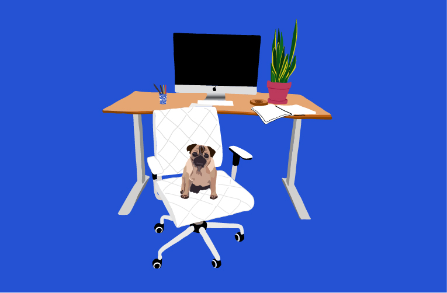

Read part one here to learn how I started full-time freelancing and got through the early obstacles of getting clients and managing a cashflow with no steady paycheck.
Months 6-12: I’ve got plenty of work. Now what?
By Feburary 2017, the model of my business shifted. Prospective clients found me and wanted help with their businesses. I didn’t find them and show up on their doorstep.
My inbox was full of businesses who needed websites! Woohoo.
I jumped at every opportunity because I finally had the chance to make steady money. I started to buy groceries regularly and I paid off almost all of my debt.
However, once I got steady work and steady clients, I realized that a one-woman business can only take on so much work. There are only so many hours in a day! Also, I learned that not every client and every project is ideal for my business. I decided it was time to focus my business goals.
I want to make amazing websites for dream clients, get a following, meet people in the industry, learn a whole lot and travel abroad for at least one month.
Going Forward: Goals for Full-Time Freelancing
Amazing Websites for Dream Clients
Every freelancer should know exactly what types of businesses are their dream clients. Even better, a freelancer should have a list of specific businesses that fit this criteria.
My Dream Client Is:
A business that wants a creative & innovative website. A business that knows a unique & well-functioning website is an investment and is willing to pay for that type of investment. A business that is run by good, genuine people. Does the above sound like you? Cool! Let’s talk :)
I want to devote my limited time to clients that I am passionate about. I want to create dynamic, innovative websites that push the boundaries in design and development. Many businesses want a simple, no-frills website to get their information online. That makes sense for many businesses starting out. I want to be the designer and developer for businesses that want the website of their dreams.
1,000 True Fans
The 1,000 True Fans theory, proposed by Kevin Kelly in his popular 2008 article “1,000 True Fans”, is the idea that you really only need 1,000 true fans, or “super fans”, to be successful.
A true fan, by Kevin Kelly’s definition, is someone who will buy any product of yours. They will buy your book in hardback and audio, they will travel a hundred miles to see you speak or perform, they will fund your kickstarter campaign.
If you had 1,000 true fans that would spend $100 on your products/services in a year, then you could make $100,000 just off your true fans. That’s a more than livable income!
For every true fan, it’s typical to have a two or three regular fans. A regular fan follows your work, but may only occasionally buy a product of yours. Let’s say you have 1,000 true fans and 2,000 regular fans. A true fan spends $100 on your products each year, but a regular fan only spends $30. With 2,000 regular fans spending $30 per year, you’d make $60,000 in addition to the $100,000 from your true fans. Making $160,000 is an achievable goal and gives you a good quality of life.
My goal for the next year is to work towards gaining my 1,000 true fans. I don’t have any products for sale yet, I only provide my services as a web designer and developer. I want to sell a product, or products, in the future, either through my web design and development skills or possibly through a side business. But I don’t want to sell anything until I grow my fan base.
The 1,000 true fans goal may sound a bit profit & numbers focused, but that’s not the main drive for me. The main drive for me is that I want to use my business and brand to connect with people. I am a true fan of many entrepreneurs, freelancers & creators. My relationship with their work, products, and them personally is more important than my relationship with any corporation. When I buy deodorant from CVS it’s not a true fan moment. When you buy a product as a true fan, it’s so much more than exchanging money for goods. You feel like you’re a part of something, you feel connected to that creator! You want to personally thank the creator for making such a great product and then tell everyone about it. I want that for my business.
Meet People in the industry IRL
I went to my first Four Athens tech industry Happy Hour last week. I’ve been freelancing as a designer and developer for a whole year, and only last week did I go to a tech happy hour in my hometown. It was a five minute walk from my apartment! And everyone was super nice! Why did it take me so long??
I’m so glad I went because I actually got to meet and talk with people in real life. As someone who works from home (#wfh life) and runs an online business, it’s become hard for me to leave my house. Going to the post office once a week becomes this looming event that I keep pushing off til the next day.
I realized two things when I went to my first tech meetup.
- The true way to gain fans & grow a network is through personal, real-life connections I can tweet all day. I can like & favorite people’s posts. But the way to really gain a presence in the tech industry is to actually be physically present.
I want to start small & local through Four Athens. Then branch into Atlanta tech meetups. And then start going to at least one or two tech conferences each year.
- Don’t let imposter syndrome stop you I have imposter syndrome, and I want to be more comfortable about it. Imposter syndrome is when you work in an industry but feel like you don’t belong because you don’t think you are as talented as everyone else.
I’m a female journalism major that took a few coding classes in college. I’m a front end developer from a small town in the south. I’m 24 years old.
These are all things that make me feel teeny tiny compared to the tech bros that have CS majors and have worked for major tech companies on the west coast. Imposter syndrome makes me not want to attend meetups because I’m afraid someone will ask me a question about programming and I won’t know what they are talking about. Then it’ll be obvious that I don’t belong there.
Thankfully, imposter syndrome is now recognized as a real issue in the tech industry. Experienced developers and designers that I look up to are speaking about their own issues with imposter syndrome (example 1, 2 ,3). They are making a point to make everyone feel like they belong.
I clutch to these kind, inspiring words when I enter networking events now. I do belong in this industry. I am talented. It’s okay to feel uncomfortable. It’s okay that I don’t know everything.
You’ve still have got a lot to learn. So put real time towards towards learning things deeply.
Last January, I bought a textbook on JavaScript. One of my top New Year’s Resolutions was ‘learn JavaScript deeply’.
The textbook has sat, untouched, on my desk for almost seven months. I use custom JavaScript & jQuery on many projects. I write successful code through a myriad of Stack Overflow forums, JSfiddles & tutorials. What I have in the end works, but I wouldn’t say I deeply understand JavaScript & jQuery.
In the last year, I’ve learned that freelancing is not just full-time billable hours of deep work. You also have to run a business (finances & communication) and you have to market your business (blogging & social media). The fourth component that I’m realizing needs dedicated time is education. I need to continue learning to improve my work. Improving my work improves my credibility, which improves my marketing.
I learn everyday on the job. Fixing problems & finding solutions is the crux of a developer’s job.
However, I’m having a challenging time learning on-the-go when it involves a programming language that I don’t have deep knowledge or experience in. That’s where I want to take a step back and really learn. It’s fascinating how I’ve gone through 20 years of schooling, I have a college degree, and I’ve only scratched the surface on what I will learn.
Travel and work abroad for at least one month
One of the main reasons why I decided to go full-time freelancing is because of the flexibility it provides for vacation time and working remotely. Some freelancers are “digital nomads” that live and work abroad year-round.
I don’t plan to work abroad full-time, but I’d like to at least go abroad for a month, possibly two months in 2018. I haven’t had many opportunities to travel in the past year because initially I couldn’t afford to travel and lately I’ve been focused on paying off debt.
This month, July 2017, will be the first month I start regularly saving money (!!!), so I hope working abroad will be achievable in the upcoming year.
Right now, I’m hoping to live and work in Barcelona — I’ve never been to Europe and I’d love to put my Spanish minor to use :) .
I’m planning on getting a two bedroom Airbnb for my stay there, so hopefully friends and family can come visit.
Conclusion
This concludes my series on “My First Year Full-Tim Freelancing”. This year has been emotional, challenging and rewarding. I thought fulltime freelancing was only possible for professionals that had many years of experience and a large network. I didn’t think it was possible for a 23 year old journalism graduate living in a small southern town to bootstrap her way to running a successful web design and development business. I had no money or clients starting out, but tenacity and the desire to deliver excellent work.
Do you have a passion that you wish would replace your “real” job? Do you want to freelance, but are scared of not having a steady paycheck?
Freelancing may not be for everyone, but I believe it’s an opportunity that is well-suited for those that want ownership of their lives.
If you have any questions on freelancing or running an online business, don’t hesitate to email me. I’d love to hear from you!